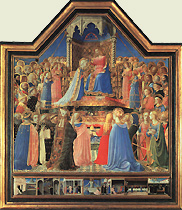

|  |
|---|
[91009] De natura loci Ad sciendum naturam loci, considerari oportet, quod non quaereretur locus, nisi esset aliquis motus secundum locum. Sicut enim ex transmutatione diversarum formarum circa materiam scimus materiam esse aliud ab omnibus formis, sic ex transmutatione diversorum corporum circa eumdem locum scimus locum aliquid esse tamquam receptaculum corporum, aliud ab omnibus corporibus. Locus autem naturalis non nominat solum aliquid continens, sed continens et conservans et formans locata, propter quod unumquodque corpus naturaliter movetur ad locum suum tamquam ad conservativum esse sui. Locus vero secundum id quod est, nec materia est nec forma locati, quia materia et forma non separatur a re, locus autem separabilis est a locato: nec etiam spatium dimensionatum infra terminos corporis continentis existens; quia nihil est infra terminos corporis continentis circumscripta magnitudine corporis contenti. Cujus ratio est, quia si circumscripta magnitudine corporis contenti esset aliquod spatium infra terminos corporis continentis, tale esset dimensionatum longitudine, latitudine et profunditate. Dimensiones autem sunt accidentia, cum sint quantitates. Ergo non possunt esse in subjecto, nisi in corpore. Si ergo esset aliquod spatium infra terminos corporis continentis praeter magnitudinem corporis contenti, sequitur quod esset aliquod accidens sine subjecto: quod est impossibile. Locus ergo neque est materia, neque forma, neque spatium infra terminos corporis continentis contentum. Quod non sit spatium probatur aliter sic: quia si locus esset spatium infra terminos corporis continentis, sequitur quod infinita loca essent simul, sicut deducit philosophus; quia cum aer et aqua, et quodlibet corpus, et quaelibet partes corporis habeant proprias dimensiones et proprias distantias, idem faciunt omnes partes in toto quod tota aqua in vase; quia secundum positionem eorum qui tenent sententiam de spatio quod sit locus, cum aqua est in vase, praeter dimensiones aquae sunt ibi aliae dimensiones spatii penetrantes dimensiones aquae. Constat autem quod eodem modo pars continetur in toto sicut aqua in vase; nisi quod locatum est divisum a loco. Pars autem non est actu divisa a toto. Si ergo dividatur pars a toto, praeter dimensiones partis essent ibi aliae dimensiones totius penetrantes dimensiones partium. Manifestum est autem quod divisio non facit de novo esse ibi dimensiones, sed praeexistentes dividit. Sicut autem post divisionem sunt ibi aliae dimensiones totius penetrantes dimensiones partium, sic erunt ante divisionem. Quot ergo partes convenit accipere in aliquo toto, quarum una continet aliam, tot erunt dimensiones se invicem penetrantes. Sed in aliquo toto continuo est accipere infinitas partes, quarum una continet aliam, eo quod quodlibet totum continuum divisibile est in infinitum. Ergo in aliquo toto continuo erunt infinitae dimensiones se invicem penetrantes. Si ergo dimensiones sunt locus, sequitur quod infinita loca sunt simul, quod est impossibile. Ex quo ergo locus non est materia, nec forma, nec spatium; sequitur quod sit quartum, scilicet terminus corporis continentis. Locus autem non solum est terminus corporis continentis, sed etiam est immobilis. Et hanc immobilitatem quidam intelligunt esse respectu locati: locus enim licet moveatur motu continentis, quia ejus ultimum est, non tamen movetur motu locati. Istud est insufficienter dictum; nec est secundum mentem philosophi; qui vult, quod sicut vas est locus mobilis, ita locus est vas immobile. Majorem ergo immobilitatem oportet dare loco naturali, quam vasi. Cum ergo vas sit immobile motu ejus quod est in vase, et locus sit magis immobilis quam vas, sequitur, quod locus non sit immobilis motu contenti, sed etiam continentis. Et confirmatur, quod circa aliquod contentum manens immobile, puta circa domum vel arborem, contingit mutationem fieri continentis, puta aeris. Si ergo locus moveretur motu continentis, sequitur quod idem manens immobile fieret in diversis locis, quod est impossibile. Locus ergo non solum est immobilis motu locati, sed etiam motu continentis. Propter quod dicit philosophus, quod si navis sit in aqua fluvii quae movetur, magis utitur ea tamquam vase, quam sicut loco continente: de natura enim loci est, quod sit immobilis. Unde totus fluvius, qui secundum se totum est immobilis, magis debet dici locus navis, quam haec aqua quae fluit et movetur: totus enim fluvius non est locus proprius navis sed communis; et ideo locum proprium navis in fluvio oportet accipere per comparationem ad totum fluvium, qui est immobilis. Est ergo accipere locum proprium in fluvio non secundum hanc aquam quae fluit et movetur, sed secundum ordinem et situm quem habet ad totum fluvium; qui quidem ordo et situs manet in aqua succedente, qui erat in aqua recedente respectu totius fluvii. Quamvis enim aqua materialiter fluat, tamen quia manet idem ordo et situs respectu totius fluvii, manet etiam idem locus: et secundum hunc modum debemus intelligere quod extremitates corporum naturalium sint locus, scilicet per comparationem et ordinem et situm quem habent ad totum corpus ipsius caeli, quod est primum continens et conservans et locans. Quamvis enim moveatur superficies aeris vel aquae secundum quod est ultimum hujus corporis vel illius, succedit tamen aliud corpus, quod eumdem situm et ordinem secundum naturam habet ad primum ordinans sive locans, quod est caelum; propter quod manet idem locus numero. Unde cessat objectio quam faciunt aliqui sic. Locus est ultimum continentis. Sed continens movetur, ergo locus movetur. Haec enim ratio bene procederet, si ultimum continentis, secundum quod hoc continens est, esset locus. Hoc autem non est verum; quia nihil habet rationem loci vel locantis, nisi per comparationem ad primum locans. Quod autem diversitas superficierum non impediat unitatem loci, patet: quia uni locato secundum numerum correspondet unus locus secundum numerum simul et semel. Sed baculus unus dimidius existens in aqua et dimidius in aere, est aliquod unum locatum secundum numerum. Ergo est in aliquo uno loco secundum numerum. Sed est in diversis superficiebus aeris et aquae. Ergo diversitas superficierum non impedit unitatem loci. Unitas ergo loci accipienda est secundum ordinem et situm ad primum locans. Et causa omnium istorum est: quia, sicut dictum est prius, locus non solum est continens, sed est continens et conservans. Nihil autem habet rationem conservantis alium nisi per virtutem et influentiam corporis caelestis, quam recipit secundum quod est in determinato situ et in determinata distantia. Et haec est causa quare aliquid habet rationem loci, scilicet per comparationem ad primum locans. Quia vero locus immobilis est; propter hoc medium caeli, quod est centrum, et ultima superficies corporis circularis, quae est caelum, sic se habent, quod hoc dicitur sursum, illud vero deorsum, quae sunt duae loci differentiae: haec enim maxime manent immobilia. Centrum semper est immobile. Caelum autem licet semper moveatur, tamen semper est in eadem distantia ad nos. Hoc autem quod dictum est de loco, intelligimus de loco naturali, qui est conservativus corporum naturalium. Et iste locus naturalis primo debetur elementis elementatis per elementa: locus enim naturalis ignis est superficies concava orbis lunae, quae manet semper in eadem distantia ad ignem, et ideo dicitur esse immobilis; locus autem aeris est superficies concava ignis, et sic de aliis suo modo; locus autem omnium elementatorum est locus deorsum, quia in omni elementato dominatur terra secundum quantitatem. Contra ea quae dicta sunt, potest objici, quod scilicet locus terrae non sit ultimum aquae, nec locus aquae sit ultimum aeris, quia unumquodque corpus naturale movetur ad locum suum. Terra autem non movetur ad superficiem aquae, sed movetur ad centrum. Ergo superficies aquae non est locus terrae, sed potius centrum. Praeterea, si terra moveatur a loco suo, aqua descenderet, ut vult philosophus 4 caeli et mundi; et similiter aer in locum aquae si amoveretur aqua. Ergo locus aquae non est superficies concava aeris, nec locus aeris est superficies concava ignis: quod est contra prius determinata. Pro solutione horum intelligendum est quod in loco non est tantum continentia locati, sed est ibi virtus conservans et formans locatum. Et propter hoc dicit Alpharabius, quod causa quare ex hac parte materiae generatur terra, et ex alia aqua vel aer vel ignis, non est nisi locus cum virtute caelesti. Quia enim frigiditas tanta quanta causatur ex distantia quae est ex orbe usque ad centrum, invenit hanc partem materiae in loco terrae, propter hoc inspissat eam inspissatione vehementi; ita quod exprimit ex ea humidum, et facit elementum siccum et frigidum, quod est terra. Frigiditas vero inspissans materiam, sic tamen quod non est ex ea exprimens humidum, sed faciens ad se fluere, generat aquam: et haec frigiditas est solum in tanta distantia, quanta est locus aquae ab orbe. Caliditas enim non consumens humidum, sed secum compatiens, generat aerem; quae quidem caliditas causatur ab orbe in tanta distantia quae est ejus ad locum aeris. Ignis enim cum sit summe calidus, generatur in loco immediato sphaerae lunae ex motu disgregante et calefaciente materiam. Hoc supposito intelligendum est, quod motus locati non est ad ipsam superficiem locantis propter superficiem, sed propter virtutem conservativam et formativam locati. Et ideo cum virtus formativa terrae sit frigiditas, quae causatur ex tanta distantia ad primum calefaciens, quod est caelum, et inchoatio hujus virtutis est in concavo aquae; perfectio autem ejus est in centro; ideo terra movetur ad centrum, et non ad superficiem aquae: et inde est, quod terra est simpliciter gravis. Virtus autem formativa ignis est caliditas perfecta, quae est completa in concavo orbis lunae: propter quod ignis est simpliciter levis. Virtus autem formativa aeris, incipit in concavo ignis, et deficit in convexo aquae: perfecta autem est in medio: et sic est de aqua suo modo. Et ideo motus aquae est a terra et ab aere ad medium ejus; et motus aeris secundum naturam est ab aqua et igne ad medium locum. Propter quod aqua et aer non sunt simpliciter leves neque graves, sed in respectu. Sic igitur patet causa, quare terra movetur deorsum simpliciter, et non ad concavum aquae, licet sit locus ejus; quia hoc facit virtus formativa quae est in loco, propter quam unumquodque locatum movetur ad locum suum. Ad aliam rationem respondet Alpharabius, quod motus aeris ad locum terrae non est motus naturalis aeris vel aquae, sed est violentus; quod patet, quia est corruptivus utriusque. Nam cum aqua movetur ad locum terrae, inspissatur a frigiditate ipsius loci majori inspissatione quam requiratur ad formam aquae, unde convertitur in terram. Similiter cum aer descendit ad locum aquae, infrigidatur a frigidatione loci illius, et convertitur in aquam. Qualiter autem hoc non obstante aqua dicatur frigida primo, et terra non, quamvis causetur ex majori frigiditate, patet ex 2 de generatione. Ex his quae dicta sunt de loco, quod locus est ultimum continentis, concludere possumus, quod corpus cui inest aliquid extra ipsum continens, tale est in loco. Cui autem non est corpus extra continens, ipsum tale in loco non est unum solum, scilicet ultima sphaera: propter quod ultima sphaera non videtur esse in loco. Sed hic est dubitatio, cum nihil videatur moveri in loco nisi sit in loco, si ultima sphaera non est in loco, motus ejus non erit localis: quod est inconveniens. Propter hanc rationem et quasdam alias, Joannes grammaticus dixit locum non esse terminum continentis, sed spatium quod est infra terminos corporis continentis. Unde dixit caelum per se esse in loco, et per se moveri in loco, quia per se dixit ipsum esse in tali spatio. Istud non potest habere veritatem secundum ea quae determinata sunt de loco; cum ostensum sit, quod locus non est spatium, sed terminus continentis. Est etiam contra intentionem philosophi, qui dicit caelum non esse in loco per se, sed per accidens. Propter quod dixit Alexander caelum non esse in loco nec per se nec per accidens, nec moveri in loco, quia non est de ratione corporis ut sit in loco, cum locus non ponatur in definitione corporis. Quia tamen oportet omnem motum contineri sub aliqua specie motus, ideo Avicenna secutus eum, dixit motum caeli non esse in loco, sed in situ vel ad situm. Haec est contra intentionem philosophi 5 Phys., ubi dicit motum tantum esse in tribus generibus, scilicet quantitate, qualitate et ubi. Sed quod illud sit falsum patet: quia ad nullum genus est motus, cujus specierum ratio consistit in indivisibili: propter quod dicimus, quod ad substantiam non est motus, quia ratio substantiae in indivisibili consistit. Non sic autem ratio albedinis, quia potest participare secundum magis et minus a subjecto; nunc autem ita est, quod ratio situs in indivisibili consistit. Ergo ad situm non est motus. Praeterea situs nominat ordinem partium in loco. Locus ergo ponitur in definitione situs. Motus ergo qui non potest esse ad locum, non potest esse ad situm. Sed motus caeli secundum eos non est ad locum. Ergo non est ad situm. Ideo aliter dixit Avempace. Dixit enim quod linea recta et corpus rectum utrumque indeterminata sunt de se: et ideo indigent aliquo finiente et terminante et continente. Linea autem circularis per se ipsam finitur, et similiter corpus circulare: et ideo non indigent aliquo finiente et continente. Propter quod dixit non esse de necessitate corporis circularis ut sit in loco: ideo dixit, quod caelum non est in loco, nec habet motum localem. Hujus enim opinionis fuit Alpharabius, quem adducit Avempace pro testimonio sui dicti. Sed hoc dictum videtur inconveniens: quia, sicut vult philosophus 8 physicorum, motus localis est primus motuum. Sed sicut dicit ibid., motus caeli est primus motus. Ergo est localis. Praeterea philosophus, 4 physicorum, vult, quod caelum sit in loco saltem per accidens. Propter hoc dixit aliter Themistius, quod caelum est in loco per partes. Ad cujus intellectum considerandum est, quod non esset locus, nisi esset aliquis motus secundum locum. Licet enim de ratione corporis non sit locus, est tamen de ratione corporis moti localiter. Unde secundum quod diversa corpora succedunt sibi in eodem loco, secundum hoc debetur locus alicui moto localiter. Aliqua enim inveniuntur moveri motu recto, sicut sunt levia et gravia: et haec secundum se tota mutant locum; et ideo secundum se tota sunt in loco. Quaedam autem sunt quae moventur motu circulari; et haec secundum se tota non mutant locum nisi secundum rationem: sed secundum partes mutant locum, et fiunt in alio loco secundum subjectum. Propter quod illud quod movetur circulariter, non de necessitate est in loco secundum se totum, sed solum secundum partes. Et propter hoc, ultima sphaera cum moveatur circulariter, non est in loco per se, sed per partes suas. Sed hoc videtur esse falsum; quia toti convenit moveri et esse in actu, et non partibus. Ergo et toti convenit esse in loco et non partibus, quia sicut convenit alicui motus, sic et locus. Propter hoc dicendum est, quod partibus sphaerae ultimae, licet non competat esse in loco actu, sunt tamen in loco in potentia; quia pars si dividatur a toto, erit in toto, sicut in loco. Sic igitur convenit caelo vel sphaerae, quod sit in loco per partes, quibus convenit solum in potentia esse in loco. Et ideo si volumus accipere illud veritatis quod continet haec opinio, possumus dicere, quod caelum simpliciter in loco non est nisi per accidens, quia est circa locum. Ad cujus intellectum sciendum est, quod sicut vult Averrois, omne naturaliter quiescens de necessitate est in loco; non tamen omne motum de necessitate est in loco. Cujus ratio est, quia omne quod quiescit, propter connaturalitatem ad suum continens quiescit; et ideo omne quod quiescit naturaliter, est in continenti sibi connaturali, propter quod de necessitate est in loco. Illud autem quod movetur, non de necessitate est in loco: quia eorum quae moventur quaedam indigent motu ad suum esse et ad suam perfectionem: et talia sunt quae sunt in continente non connaturali: propter quod moventur ad continens sibi connaturale: et omnia talia de necessitate sunt in loco. Alia sunt quae non indigent motu ad suum esse nec ad sui conservationem, sicut est corpus caeleste; et tale non movetur ad continens sibi connaturale nec in continente sibi connaturali, sed movetur ab intelligentia propter explicationem causalitatis causae primae; et tale non de necessitate est in loco: esse enim in loco non est solum contineri a loco, sed contineri et conservari. Et ideo quod non indiget conservante, cujusmodi est corpus caeleste et quodcumque incorruptibile, non de necessitate est in loco. Sed secundum praedeterminata oritur duplex dubitatio. Prima est, quare orbes inferiores sunt in loco, cum non sit de necessitate corporis caelestis esse in loco. Secunda est, propter quid motus caeli dicatur localis, cum corpus caeleste, saltem prima sphaera, non sit in loco. Ad primum dicendum, quod accidit orbibus inferioribus quod sint in loco, nec est de necessitate eorum, cum non indigeant conservante, ut dixit Avempace. Propter quod dicuntur aequivoce orbes inferiores esse in loco et elementa; quia orbes inferiores solum dicuntur esse in loco, quia sunt in aliquo exteriori continente: elementa autem et elementata sunt in loco tamquam in continente et conservante. Ad secundum patet solutio: quia motus non dicitur localis eo solum quod sit in loco, sed etiam dicitur motus localis eo quod est circa locum. Propter quod dicit philosophus, 1 caeli et mundi, quod motus localis est triplex: scilicet a medio, ad medium et circa medium. Motus a medio est levium; motus ad medium est gravium; motus circa medium est corporis caelestis. Et haec est intentio Commentatoris 4 Phys. Sed juxta haec quae dicta sunt, remanet unum dubium: cum superficies corporis continentis dicatur locus, quomodo locus et superficies dicantur esse diversae species quantitatis? Respondeo: omissis omnibus aliis opinionibus quae sunt circa hoc, dicendum est, quod propria ratio quantitatis, quae competit quantitati ut quantitas est, ratio est mensurae; propter quod dicit Averrois, quod quantitates sunt differentiae mensurarum. Alia est enim ratio mensurandi aliquid extrinsece et intrinsece. Et ideo ultimum continentis, ut mensura est continentis intrinseca, dicitur superficies: ut autem mensura contenti et locati extrinseca, est locus. Et ideo superficies et locus, licet sint unum materialiter, quantum ad id quod quodlibet est ultimum continentis, tamen diversae sunt species constitutae per diversas formales rationes. Et haec de loco dicta sufficiant.